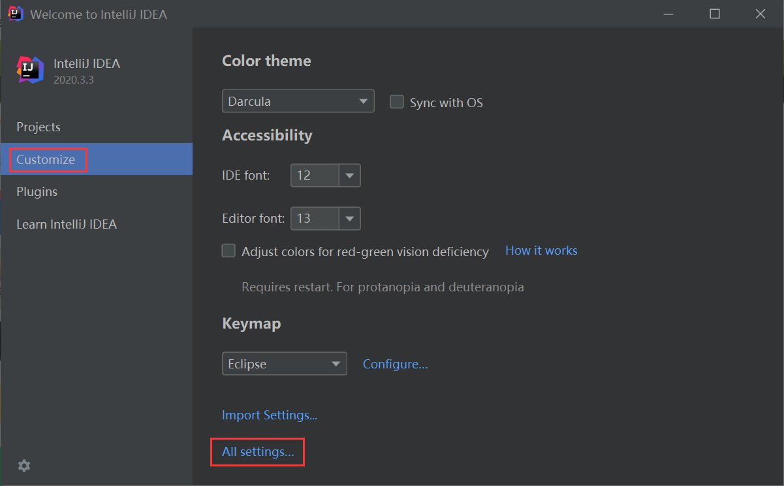
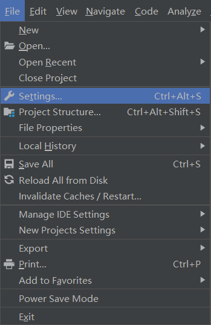
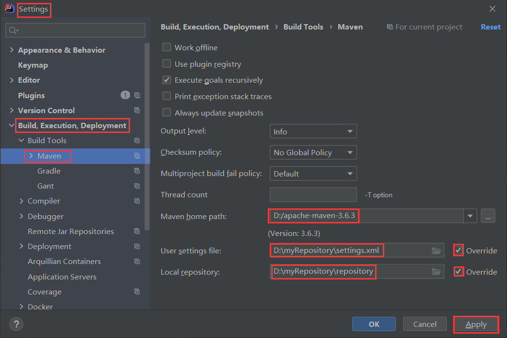

IDEA配置Maven环境
IntelliJ IDEA 是当前最流行的 Java IDE（集成开发环境）之一，也是业界公认最好用的 Java 开发工具之一。IntelliJ IDEA 支持 Maven 的全部功能，通过它我们可以很轻松地实现创建 Maven 项目、导入 Maven 项目、向已有项目添加 Maven 支持等功能。
本节我们以 IntelliJ IDEA 2020.3.3 为例，详细介绍如何在 IntelliJ IDEA 中配置 Maven 、新建以及导入 Maven 项目。
将本地安装的 Maven 配置到 IntelliJ IDEA 中操作步骤如下。
1. 在 IntelliJ IDEA 欢迎页面左侧选择 Customize，然后再右侧点击 All settings...，如下图。
或者在 IntelliJ IDEA 工作区上方的菜单栏中选择 File ，然后在下拉菜单中选则 Settings...，如下图。
2. 在弹出对话框中，展开“Build,Execution,Deployment”，在 Build Tools 下选择 Maven，如下图。
本节我们以 IntelliJ IDEA 2020.3.3 为例，详细介绍如何在 IntelliJ IDEA 中配置 Maven 、新建以及导入 Maven 项目。
IntelliJ IDEA 中配置 Maven
IntelliJ IDEA 默认自带了一个 Maven，但自带的 Maven 会随着 IDEA 的升级而升级，可能会出现各种意料之外的问题，我们不建议初学者使用 IDEA 自带的 Maven，因为自带的 Maven 会被 IDEA 屏蔽很多细节，不利于初学者学习和了解 Maven，因此我们推荐在 IntelliJ IDEA 中使用本地安装的 Maven。将本地安装的 Maven 配置到 IntelliJ IDEA 中操作步骤如下。
1. 在 IntelliJ IDEA 欢迎页面左侧选择 Customize，然后再右侧点击 All settings...，如下图。

图1：IDEA 欢迎页面 settings
或者在 IntelliJ IDEA 工作区上方的菜单栏中选择 File ，然后在下拉菜单中选则 Settings...，如下图。

图2：IDEA Settings
2. 在弹出对话框中，展开“Build,Execution,Deployment”，在 Build Tools 下选择 Maven，如下图。

图3：IDEA 中配置本地 Maven
由图 3 可知，在 IntelliJ IDEA 中配置 Maven 需要进行 3 步：
- 在 Maven home path 中，指定本地 Maven 的位置；
- 勾选 User Settings file 后面的 Override，并指定本地仓库的 setting.xml 文件；
- 勾选 Local repository 后面的 Override，并指定本地仓库的地址。
在 IntelliJ IDEA 中使用 Maven
配置好 Maven 环境后，就可以在 IntelliJ IDEA 中使用 Maven 了，我们将在以下几节中详细讲解：关注公众号「站长严长生」，在手机上阅读所有教程，随时随地都能学习。内含一款搜索神器，免费下载全网书籍和视频。

微信扫码关注公众号